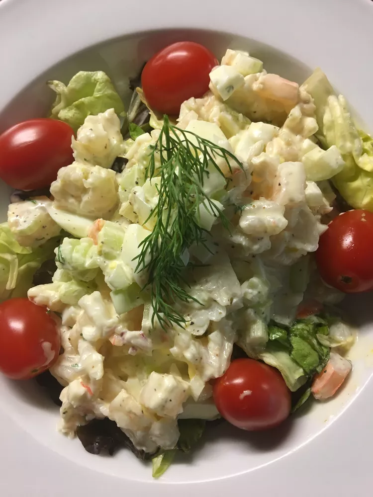

Shrimp Egg Salad

Shrimp Egg Salad Recipe
This recipe was inspired by the open face shrimp sandwich served at Ikea's cafeteria and my love of deviled eggs.
Ingredients
- 1 pound cooked shrimp - peeled, deveined, and chopped
- 4 hard-cooked eggs, chopped
- 4 tablespoons mayonnaise
- 1 teaspoon Dijon mustard
- 1 sprig chopped fresh dill
- 4 leaves green leaf lettuce
Steps
- In a medium bowl, mix together the shrimp, eggs, mayonnaise and mustard. Spoon onto lettuce leaves to serve.
Notes
Place eggs in a saucepan and cover with cold water. Bring water to a boil and immediately remove from heat. Cover and let eggs stand in hot water for 10 to 12 minutes. Remove from hot water, cool, peel and chop.